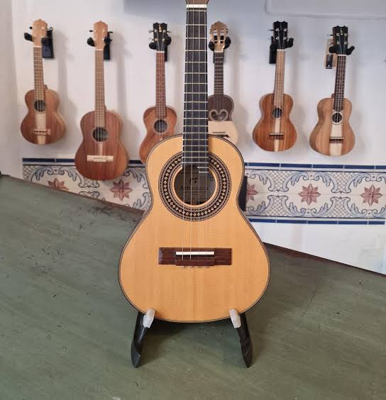

Músicas, Cantores e estilo com cavaco
| Cantor | Música Marcante | Estilo |
|---|---|---|
| Arlindo Cruz | O Show Tem Que Continuar | Partido-Alto |
| Nelson Cavaquinho | Quando me chamar saudade | Chorinho |
| Beth Carvalho | Vou festejar | Samba de roda |
O cavaquinho é um instrumento musical de cordas dedilhadas, com quatro cordas, muito popular no Brasil no samba, no choro e no pagode

O cavaquinho é um instrumento de cordas com origem em Portugal, mais especificamente na província do Minho (na região de Braga), remontando aos séculos XVI e XVII.
Imigrantes portugueses levaram o cavaquinho (na sua versão regional chamada de braguinha ou
machete)
para o Havaí no final do século XIX, inspirando a criação do famoso ukulele.
O famoso músico Nelson Cavaquinho ganhou esse apelido porque o instrumento era sua marca registrada nas rodas de choro
| Cantor | Música Marcante | Estilo |
|---|---|---|
| Arlindo Cruz | O Show Tem Que Continuar | Partido-Alto |
| Nelson Cavaquinho | Quando me chamar saudade | Chorinho |
| Beth Carvalho | Vou festejar | Samba de roda |